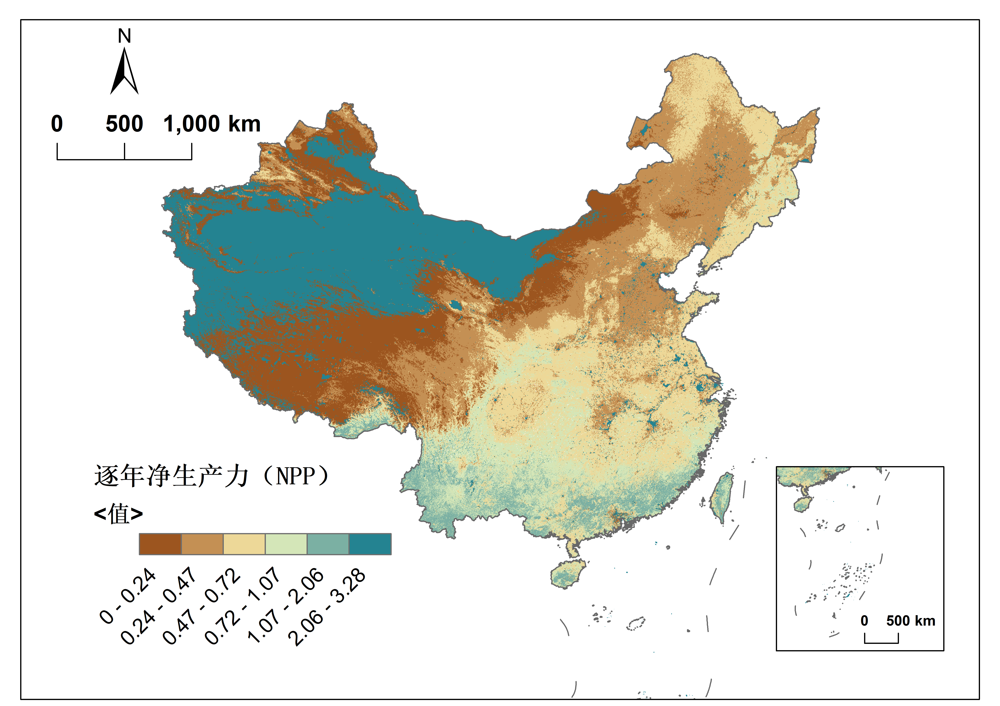

碳汇损失核算
NPP变化趋势
说明
在生态系统科学和全球碳循环研究中，一个生态系统每年通过光合作用净吸收并以生物质形式固定的碳量，被定义为净初级生产力（Net Primary Productivity, NPP）。将“碳汇能力”明确地映射到NPP这一国际公认的、可遥感监测的科学变量上，是构建本模型的基石。

在生态系统科学和全球碳循环研究中，一个生态系统每年通过光合作用净吸收并以生物质形式固定的碳量，被定义为净初级生产力（Net Primary Productivity, NPP）。将“碳汇能力”明确地映射到NPP这一国际公认的、可遥感监测的科学变量上，是构建本模型的基石。
